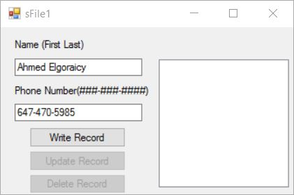
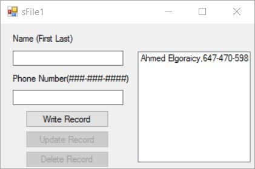
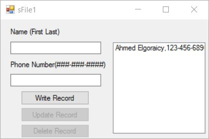
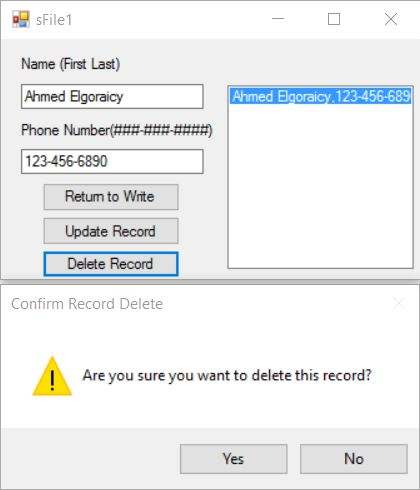
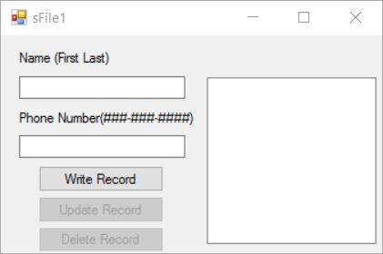
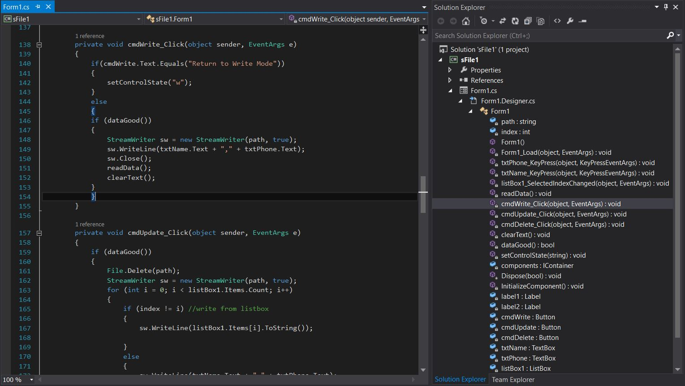

Intro

Hello and welcome. Thank you for taking the time to visit my portfolio. I've graduated from Computer Engineering in 2008 from Arab Academy for Science and Technolog and Maritime Transport. I've had the chance to learn how computers work from both the hardware and software aspects. After graduation, I worked in the Network field with one of the top network companies in Europe and the world - Orange Business Services. My role was Network Support Engineer Help Desk Specialist level 2. Since computer engineering has so many career paths, I didn't realize that the network department isn't what I wanted to persu. After 2 years, I moved to Canada where I've continued my education in programming at Sheridan college in Oakville. Upon graduation, I joined and IT company, MBI Services, as an IT Field Technician. IT Field tech services was not related to my main studies at Sheridan college, so I left the company and decided to persu software development instead. During my studies at Sheridan college, I built and worked on several projects using Java, Javascript, C#, PL/SQL, Linux and Windows administration using a multitude of frameworks and technologies. You can have a look at my college projects under the work section.
Despite not working in fields that were related to my education, I've learned so many different skills, soft and technical, and gained tremendous experience. I've always sought to persue a software development career, yet life directed me elsewhere. I would like to take the opportunity to excel in what I've learned in University and college.
Work
What I've learned at Sheridan

Sheridan College's Computer Programmer program sets students up on a fast track to a career. With up to date courses that align with current industry standards and technologies, Sheridan prepares students to be ready to join fast-paced work environments upon graduation as full-stack software developers. The courses I've studied at Sheridan's Computer Programmer program included:
- Web development and interface design using HTML5/CSS3/Javascript/PHP and more
- Java, C#, XML and .NET
- Database design and implementation (Oracle/MySQL)
- Network communications and configurations
- Systems analysis and design
- Web-based application development for mobile smartphones
- Communication skills
- Operating systems
- Project management
Some of my work:
C# ASP.NET
In this project, the application receives 2 inputs from the user: Name(first and last name) and the phone number. The application reads the input using class StreamReader and writes to the file with the given path using class SreamWriter to save the records. The textbox on the right displays the current records in the text file.

Fig.1 - Inputting data

Fig.2 - Record added

Fig.3 - Record updated

Fig.4 - Record deletion prompt

Fig.5 - Record deleted

Fig.6 - Code snippet
System Analysis and Design
Here I've learned how to analyze a proposed case study to design the most optimal solution/system for a company. Using structured analysis, object-oriented analysis and agile methodology, I worked closely with a small team to design and build a system for an imaginary client by identifying the given components, business requirements and finally provide the deliverable.
 System Analysis and Design - Process Flow Diagram
System Analysis and Design - Process Flow Diagram
DRDBMS
In Relational Database Management Systems, I learned how to manipulate relational database by creating, reading, updating, and deleting (CRUD) data as well as using PL/SQL to manipulate query and data based on the given problem, on a test schema and tables. I've applied PL/SQL using Oracle SQL Developer. I wrote procedures with loops, exception handling and triggers.
The learning outcome of this course was as follows:
- Query a database using a variety of SQL techniques.
- Maintain the data in the database.
- Establish referential integrity and domain constraints.
- Create and execute SQL scripts.
- Create stored procedures.
- Create user-defined functions.
- Create database triggers.
- Trap and handle exceptions in applications.
- Build complex business rules using advanced language features.
 Code snippet of table creation
Code snippet of table creation
 simple query examples
simple query examples
 explicit rusor example
explicit rusor example
 user-defined exception example
user-defined exception example
Web Development with PHP and Javascript
Here, I have created a website to contact a superhero of my choice. I picked the flash since he's the fastest haha. I deployed my website on Sheridan College's virtual server, so all the PHP backend code was functional during my studies at Sheridan, when I had access to their server. I can only show snapshots here, on GitHub's free host, since it only allows for static websites, however, I'm planning on renting my own web host very soon.
I've created the backgrounds and site pannel bar at the top using Adobe Photoshop, including the icons. I've added an onMouseOver effect for the 3 buttons on the index screen "Speed Force", "Home" and "Contacts" with animation effect using javaScript. In the contacts page, there's a form that accepts input from user using PHP and redirects the user to a notification that their message has been recieved.


Here's a code snippet of contacts.php with input validation:
 Code snippet of contacts.php page
Code snippet of contacts.php page
Web Application with XML
This website uses predefined data from an XML file and displays the information in forms of table and graph and shows a map.
 OECD index
OECD index
 OECD Textual Display
OECD Textual Display
 OECD Graphical Display
OECD Graphical Display
 OECD Geographic Display
OECD Geographic Display
Java EE


About

An aspiring programmer seeking to gain experience in corporate software solutions
Contact
Email: ahmed.elgoraicy@gmail.com
Cell: 1 647-470-5985
You are welcome to visit my GitHub account.